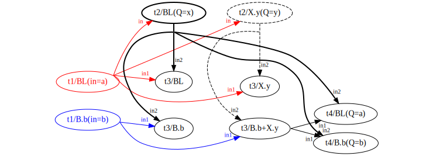

ducttape: A Crash Course « 4. Versioning & Packages
This section addresses miscellaneous ducttape features that may prove useful.
config files
directives
shorthand variable references
the flat directory structure
the attic
Branches may be expressed as a range of integers using the .. operator:
task run_several_times > x :: trial=(WhichTrial: 1..10) {
# Use bash's built-in random number generator
echo $RANDOM > $x
}
This creates 10 branches of the WhichTrial branch point.
Sometimes it is useful to encode hierarchical interactions between multiple branch points. For instance, imagine a cross-validation setup where a prediction step needs to be run for each of 4 folds in development and each of 8 folds at test time. We assume the data for each fold is in a separate file. We wish to encode the prediction mode as dev or test in a branch point for experimental convenience. This can be expressed succinctly:
task predict < in=(DevOrTest: dev=(DevFold: d1 d2 d3 d4)
test=(TestFold: t1 t2 t3 t4 t5 t6 t7 t8))
> out { … }
Here, a different nested branch point obtains depending on the branch of the outer branch point, DevOrTest. We can then define two plans, one targeting the dev set and one targeting the test set, without having to repeat the names of the individual folds.
An alternate strategy would be to use nested sequence branch points:
task predict < indir=(DevOrTest: dev=/path/to/dev test=/path/to/test)
> out
:: fold=(DevOrTest: dev=(Fold: 1..4) test=(Fold: 1..8)) { … }
In this case the nested branch points have the same name, but different numbers of branches. (In general, they could have different branch names and/or values.) A disadvantage of this approach is that ducttape will check only for the directories containing the input files, not the files themselves: the full filename will have to be assembled in the body of the task by combining $indir and $fold.
As noted in section 2, plans may be used to select execution paths in a HyperWorkflow with many paths, especially if it would be intractable to execute all possible paths. In some cases, however, it is desirable to have a task whose inputs are limited to certain branches.
For example, a machine learning workflow might have a predict task that operates separately on dev and test datasets—each with its own branch—and a subsequent tune task that uses its output, but only applies to the dev set. We can sketch these two tasks as follows:
task predict < in=(DevOrTest: dev=dev.txt test=test.txt) > out { … }
task tune < in=$out@predict[DevOrTest:dev] > out { … }
The branch grafting notation [DevOrTest:dev] expresses that the input from an upstream task is limited to a particular branch—the dev branch of the DevOrTest branch point. No realization of the tune task will be created for the test branch.1
The general behavior of branch grafting is difficult to explain, but we will give an informal description and a few examples.
Consider two tasks, t and t′, in a dependency relationship established by an input variable v in the header of t′. Suppose the upstream task t defines a branch point B. There are two scenarios:
The following workflow is a simple 2-task pipeline with 3 variants of the downstream task:
task t1 < in=(B: a b) > out1 out2 { … }
task t2-par < in1=$out1@t1 in2=$out2@t1 { … }
task t2-zee < in1=$out1@t1 in2=$out2@t1[B:b] { … }
task t2-vee < in1=$out1@t1[B:a] in2=$out2@t1[B:b] { … }
Both of the inputs in t2-par form unqualified dependencies on t1. t2-zee and t2-vee use branch grafting to form qualified dependencies. We depict the three dependency structures as follows:
Each realization node is shown with the task name and realization name (BL stands for Baseline.baseline). The diagrams make clear that the grafting in the zee and vee structures does not merely filter the allowed realizations relative to the fully unqualified dependencies (parallel): here the grafting actually imposes "cross-branch" or "mixed-branch" dependencies.
The grafting mechanism is powerful enough to allow fairly baroque workflows, such as the following:
task t1 < in=(B: a b) > out { … }
task t2 < in=$out@t1[B:a] > out :: Q=(X: x y) { … }
task t3 < in1=$out@t1 in2=$out@t2 > out { … }
task t4 < in1=$out@t3[B:b,X:y] in2=$out@t2[X:x] :: Q=(B: a b) { … }

TODO: advanced branch grafts example in next section
TODO: interaction b/w grafting and nesting of branch points?
TODO: disjunction of branches?
TODO: is it possible for the tune step to access multiple outputs of the eval step at once? Kind of like a reduce step?
This use case of restricting the paths followed could also be accomplished with a plan, though this is not true of all uses of branch grafting.↩